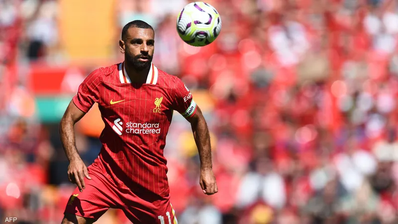

Bayer Leverkusen, the league and cup champion, won the German Super Cup competition for the first time in its history, beating its guest Stuttgart, runner-up in the league, on penalty kicks 4-3 after they tied 2-2 in regular time on Saturday. Stuttgart, which won the title in 1992, failed to take advantage of the numerical deficiency in its host's ranks after its French striker Martin Terrier was sent off with a red card in the 37th minute, and conceded a fatal goal from substitute striker Patrik Schick (88), after he had equalized through Frenchman Enzo Meo. (15) in response to the opening goal from Nigerian Leverkusen striker Victor Boniface (11), before taking the lead thanks to substitute Dennis Ondaf (63).
Egyptian football star Mohamed Salah broke the record for the number of goals scored in the English Premier League in Liverpool's opening match of the season. By scoring Liverpool's second goal against Ipswich, Mohamed Salah raised his tally of goals in the opening round of the English Premier League season to 9 goals, surpassing all the league's top scorers with this number. The Egyptian star previously shared the record with Frank Lampard, Wayne Rooney and Lan Shearer.